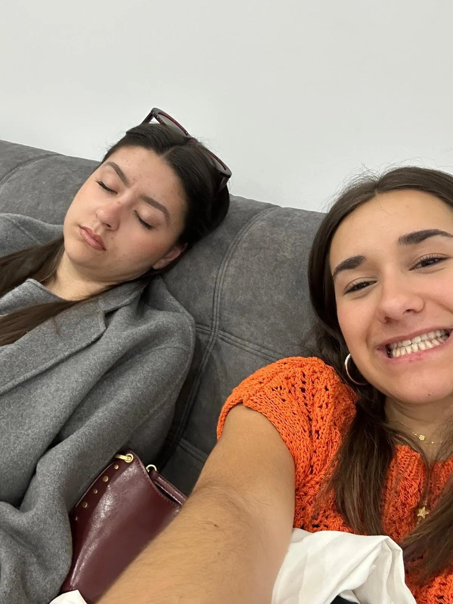
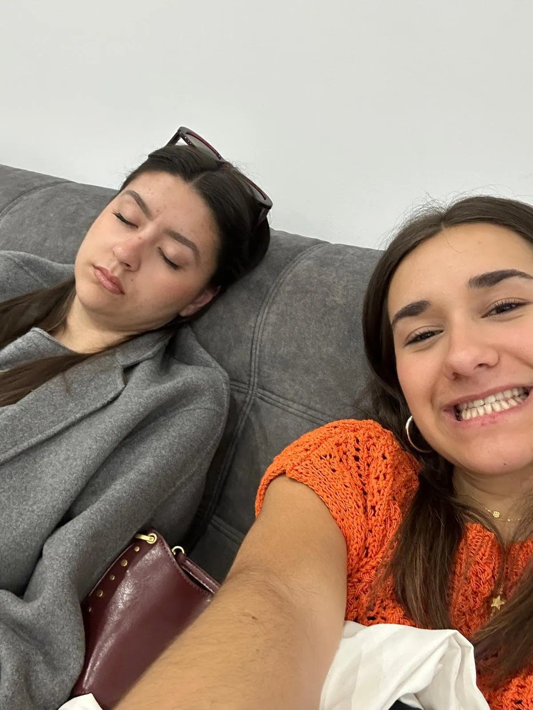

DÍA +1 – DÍA DE IMPROVISAR CON LO QUE HUBO
Bueno, el famoso día +1, ese que ya no estaba en los planes de nadie. A ver, estos días ya no tienen tanta chicha porque no había nada
organizado. Entonces, básicamente, hicimos lo que pudimos con lo que teníamos.
Ese día, por fin, nos pudimos despertar tarde, sin
prisas, sin guía, sin tumba ni señora cantando en cúpula. Bueno, salvo los que se iban ese día, que tuvieron que madrugar para coger el
bus. Pobres.
El resto, pues eso: recoger habitaciones, lo típico de “¿alguien ha visto mi calcetín?”, “creo que dejé el cargador en la
704”, “ah, no, que lo tiene Marta en la 613”. Caos logístico. Pero conseguimos salir de ahí con todas nuestras pertenencias (creemos).
Después de dejar las maletas abajo en recepción, nos fuimos al edificio de enfrente a comer. Y bueno, cuando acabamos, dijeron de ir de
compras otra vez. Lo gracioso es que la mayoría teníamos el dinero guardado con las maletas, así que tocó volver, abrir maletas, buscar
carteras… y vuelta a salir.
Toda la tarde de compras, otra vez. Pero oye, no nos quejamos, al final hacía buen tiempo, había ambiente,
y ya estábamos en modo “bueno, lo que nos echen”.
Después volvimos caminando hasta el hotel, recogimos todo y nos llevaron al nuevo
hotel. Y aquí viene el dato: ese hotel era… curioso, cuanto menos. Digamos que la cena no tenía nada que ver con lo que veníamos comiendo.
A ver, yo porque soy de buen diente, y si tengo hambre como hasta una piedra, pero hubo gente que directamente no pudo ni probar bocado.
Otros pidieron algo extra, y otros simplemente aguantaron hasta el desayuno del día siguiente.
Esa noche fue bastante tranquila, por no decir aburrida. En ese hotel ya no había nadie de nuestra edad, estábamos todos cansadísimos, y como sabíamos que al día siguiente tocaba despertarse temprano, pues nada, cama.
De hecho, ni deshicimos las maletas, íbamos por el hotel con unas pintas que ni para subir a por el pan. Estilo absoluto.
Y bueno, esa
noche nos explicaron el plan para el día siguiente. Básicamente, salíamos del hotel todos juntos, pero en dos grupos. Dos personas iban en
el primer vuelo, y tres personas en el segundo. El primer grupo salía primero, esperaba cuatro horas en Madrid, y el segundo grupo llegaba
después. Y ya, una vez todos en Madrid, cogíamos el bus juntos de vuelta. En teoría, un plan sin fallos. En teoría.
DÍA FINAL – LA ODISEA DE VUELTA A CASA
Y nada, este ya es el último día. El más cansado de todos, sin ninguna duda. Creo que nunca en mi vida había terminado
tan reventada. Fueron muchas horas, muchas emociones, muchos grados de fiebre.
Nos despertamos temprano, como
si aún nos quedara energía para madrugar. Algunos ya directamente amanecieron enfermos, gente con fiebre, tosiendo,
un desastre. Pero bueno, había que llegar vivos a Vigo, como fuese.
Fuimos a por un café, recogimos todo, y nos
subimos al bus hacia el aeropuerto. A mí me tocó en el segundo grupo, por suerte, porque era donde estaban la
mayoría de mis amigos. Cuando llegamos, nos hicimos con unas mesas, porque claro, no embarcábamos todos juntos.
Tuvimos que esperar horas.
Y aquí viene lo mejor: la gente del aeropuerto de Atenas… desagradable, cuanto
menos. Poco más y nos linchan por querer sentarnos. Parecía que las mesas eran patrimonio nacional. Pero bueno,
sobrevivimos. Nos alejamos discretamente, comimos lo que pudimos (tampoco mucho, porque entre el estómago y el ambiente…).
Después, ya resignados, nos pusimos a jugar a las cartas, compramos uno nuevo para hacer tiempo. Jessica, la pobre, ya
estaba hasta arriba. Quería irse a su casa, tenía exámenes por corregir y, encima, tenía que hacerse cargo de medio
grupo que estaba medio muerto. Un caos.
Al rato hicimos el check-in, compramos cena por si tocaba comer en el
avión, y ya rumbo al infierno… perdón, al avión.
Nuestro vuelo fue el peor de todos, con diferencia. A las 20:00
salíamos, y cuando ya estábamos dentro del avión, nos enteramos de que lo de llegar juntos a Vigo… pues va a ser que
no. El primer grupo se fue directamente a Vigo desde Madrid, y nosotros nos íbamos a quedar esperando un rato más.
Y como si eso no fuera suficiente, nos tocó tormenta. De noche. Turbulencias. Truenos. El avión temblaba. Yo nunca lo
había pasado tan mal en un vuelo. Había gente durmiendo (¿cómo?), Pablo bailando (¿por qué?), y yo leyendo, cenando
como podía y rezando a todos los dioses conocidos y por conocer para llegar enteros a Madrid.
Llegamos sobre las
doce. Muertos. Y aún quedaba camino.
Cuidado con dormirte...
Entre recogidas, maletas, y líos varios, nos dieron comida antes del bus. Yo
no comí, me encontraba fatal, con fiebre, calor, y un solo deseo: llegar a mi casa.
Lo único bueno fue que, al ir
en grupos separados, íbamos cómodos en el bus. Cada uno con dos asientos. El primer tramo, de doce a cuatro de la
mañana, fue horrible: frío, sueño, incomodidad. Nadie durmió. En el segundo tramo, ya… caímos como moscas. KO total.
Llegamos a Vigo sobre las ocho o nueve de la mañana, y sinceramente, el sábado se convirtió en un día perdido. El primer
grupo estaba por ahí, comiendo, quedando, haciendo vida social… Y nosotros, durmiendo como si llevásemos una semana de
festival.
Llevábamos casi 24 horas viajando sin parar. Entre vuelos, esperas, tormentas, buses, enfermos… una
odisea. Estábamos hartos de todo el mundo, del clima, del aeropuerto, de las trenzas de José, y hasta de las cartas.
Pero eso sí, me quedo con un recuerdo increíble. Y seguramente me estoy olvidando de mil detalles, de cosas que solo
nosotros sabemos… pero bueno, esas se quedan para nosotros. Porque al final, por mucho que nos quejáramos, lo vivimos
juntos. Y eso ya nadie nos lo quita.

 

.webp)
.webp)
.webp)